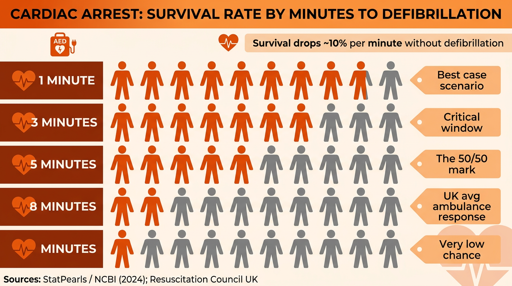

Reducing the Risk of Injury
In any sporting activity, there is always a risk of injury. Coaches, players and support staff all share a responsibility to identify safety hazards and take steps to reduce the chance of harm. Playing surfaces and equipment are obvious potential hazards, but risks can also come from the surrounding environment, the weather, and even the characteristics of the participants themselves.
Responsibility for safety does not fall on one person alone. Coaches, officials, players and support staff must all play their part in identifying hazards and following safety procedures to protect everyone involved.
Safety Checks
Safety checks should be carried out for all activities before and during participation. These checks help to identify hazards early and prevent injuries from occurring.
Before Participation
- Check the playing surface — look for leaves, debris, glass, wet patches or uneven ground that could cause slips, trips or falls.
- Check the area around the pitch — ensure padding is in place on goalposts, corner flags are secure, and there are no obstructions near the playing area.
- Check the players — ensure participants are wearing suitable clothing and footwear, all jewellery has been removed, and long hair is tied back.
During Participation
- Check the weather throughout — if conditions become unsafe (lightning, heavy rain, extreme heat), the activity should be stopped immediately.
- Monitor players for medical issues — watch for signs of dehydration, exhaustion, breathing difficulties, or any emerging injury that could worsen if play continues.
Risk Assessment
A risk assessment is a written document that identifies possible hazards and proposes ways to remove or reduce the risk. It must be written by someone with relevant knowledge and experience of the activity — typically the coach or a qualified safety officer.
A risk assessment serves several important purposes:
- It identifies hazards that could cause harm to participants, officials or spectators.
- It evaluates whether the level of risk is acceptable or too high.
- It identifies who could be injured and how.
- It enables steps to be taken to minimise or eliminate the risks identified.
The main purpose of a risk assessment is to reduce the chances of injury by identifying hazards before they cause harm and putting measures in place to control them. Risk assessments must be carried out before AND during the activity.
A risk assessment also considers the surrounding areas that could cause injury, such as advertising boards, spectator seating areas, fencing, or hard surfaces near the edge of the playing area.
Control measures are the specific actions put in place to remove a hazard or reduce a risk. Examples include ensuring players wear correct footwear, cleaning spillages immediately, checking equipment before use, and padding any hard surfaces near the playing area.
A typical risk assessment follows a three-column format:
- Hazard: Wet playing surface → Risk: Players could slip and suffer a sprain or fracture → Control Measure: Inspect the pitch before the session; postpone if waterlogged.
- Hazard: Unpadded goalposts → Risk: Players could collide with the post and suffer a concussion or fracture → Control Measure: Attach protective padding to all posts before the session.
- Hazard: Player wearing jewellery → Risk: Jewellery could catch on another player or equipment, causing a laceration → Control Measure: All jewellery must be removed before participation.
This format — hazard → risk → control measure — is exactly what the exam expects you to use when answering risk assessment questions.
Characteristics of the Individual or Group
When assessing risk, the coach must also consider the specific characteristics of the people taking part. What is safe for one group may not be safe for another.
- Age — younger children require more supervision and may not be physically developed enough for high-intensity activity.
- Individual fitness levels — less fit members of the group face a greater risk of injury if they push too hard or are asked to do activities beyond their current ability.
- Experience — experienced performers may safely take part in more demanding sessions, while beginners need simpler activities with closer supervision.
- Medical conditions — conditions such as asthma or diabetes must be considered as high-risk factors. The coach must know about these conditions and have appropriate medication (e.g. inhalers) available.
- Group size — large groups on a court or pitch can lead to collisions, difficulty hearing instructions, and reduced supervision per player.
Strategies to Reduce Risk
Medicals
A medical is an examination for people intending to take part in sport. It detects conditions that may limit participation, assesses current fitness levels, and evaluates both mental and physical health. Medicals are typically carried out around one month before the intended activity begins.
Screening
Screening is a more thorough process used for elite athletes. It detects potential problems before any symptoms occur and is usually carried out during the off-season. Screening includes a medical but goes further, with specialist tests such as cardiac screening. CRY (Cardiac Risk in the Young) screening is particularly important for young athletes, as it can detect hidden heart conditions that could be life-threatening during intense exercise.
Students sometimes confuse medicals and screening. The key differences are:
- Medicals are for anyone intending to do sport. They assess general fitness and detect conditions that might limit participation. Done around one month before the activity.
- Screening is for elite athletes. It goes further than a medical by looking for hidden problems before symptoms appear. Done in the off-season. Includes specialist tests like CRY cardiac screening.
Think of it this way: a medical asks “Are you fit to play?” while screening asks “Is there anything hidden that could put you at risk?”
National Governing Body (NGB) Policies
Every sport has a National Governing Body (NGB) — for example, the FA (football), the RFU (rugby union), and the ECB (cricket). NGBs set rules and regulations specifically designed to make the sport safer. These include laws of the game, equipment standards, age-group restrictions, and concussion protocols. Coaches and officials must follow NGB policies to ensure the safety of all participants.
Emergency Action Plans (EAPs)
An Emergency Action Plan (EAP) is a written plan that states the procedures to follow in an emergency. It ensures the safety of performers, enables supervisors to know exactly what to do, and reduces the risk of life-threatening outcomes. Every sports venue and event should have an EAP in place.
An EAP has three main sections:
- Emergency Personnel — who to contact, who is the designated first responder, who are the qualified first aiders, and who is the coach responsible for the group.
- Emergency Communication — contact numbers for emergency services (999), the location of the nearest telephone or mobile phone, and how to direct emergency services to the venue.
- Emergency Equipment — the location of the first aid kit, defibrillator, inhaler, ice packs, stretcher, and evacuation chair.
The three sections of an EAP are Emergency Personnel, Emergency Communication, and Emergency Equipment. Having all three in a written plan means everyone knows their role and can respond quickly — which can be the difference between a minor incident and a life-threatening emergency.

Imagine a player suffers a severe asthma attack during a football training session. Here is how the three sections of the EAP work together:
- Emergency Personnel: The coach recognises the attack and calls over the qualified first aider on site. They know exactly who to go to because the EAP names the first responder.
- Emergency Communication: The first aider assesses the player and decides an ambulance is needed. They use the mobile phone listed in the EAP to call 999 and give the venue’s address and directions.
- Emergency Equipment: While waiting for the ambulance, the first aider retrieves the player’s inhaler from the first aid kit (the EAP states its exact location), helping to stabilise the player’s breathing.
Without the EAP, there could be confusion about who takes charge, time wasted searching for a phone or first aid kit, and a delayed response that puts the player at greater risk.